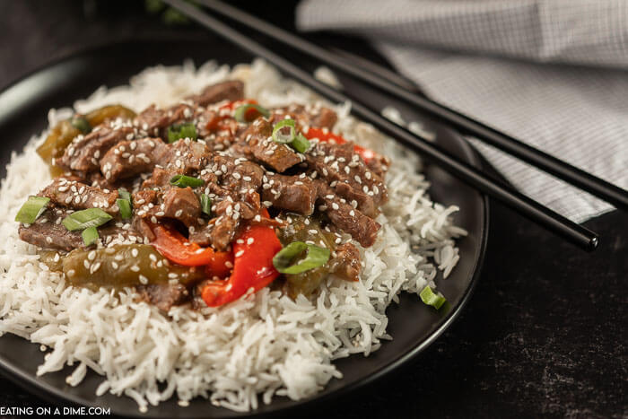

Easy Pepper Steak

Description
Strips of tender steak are marinated in a homemade sauce and stir-fried with sautéed bell peppers and onions. Quick, easy, and so delicious!
Ingredients
- Soy Sauce
- Beef
- Pepper
- Garlic
- Onion
- Ginger
Steps
- Whisk sauce ingredients together in a bowl.
- Stir fry onion & peppers in a large skillet until tender. Transfer to a plate.
- Sear the beef strips (as per the recipe below) and cook just until browned.
- Add onion & peppers back to the skillet along with the sauce. Cook until thickened.